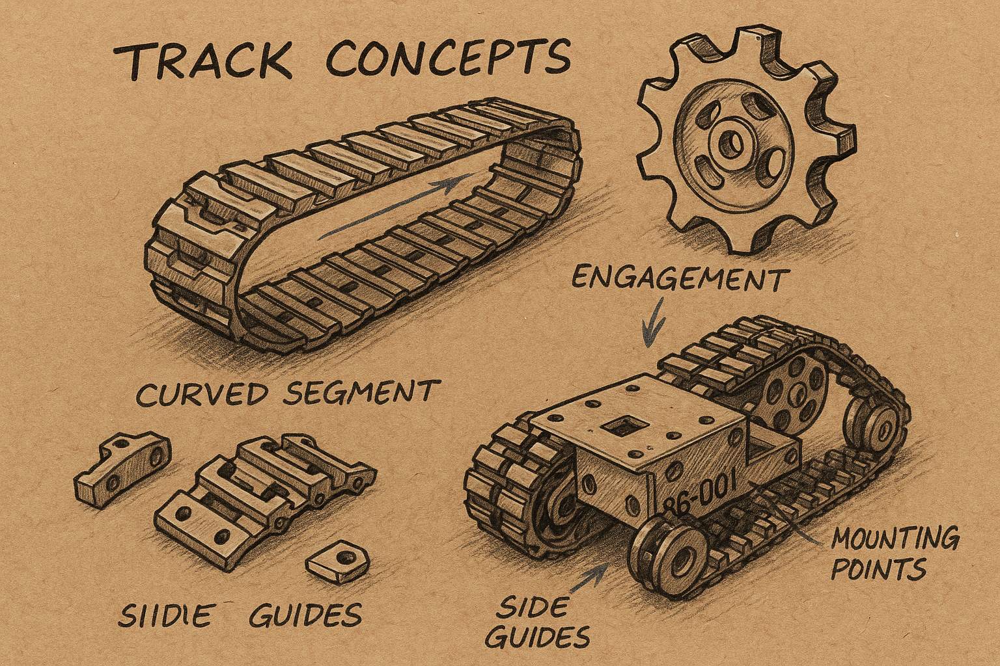

Galerie
Eine Sammlung von visuellen Momenten aus der Welt von Terrax: Prototypen, Szenen, Skizzen und Entwürfe.

Erwachen von BB-001

Kettendiagramm
Eine Sammlung von visuellen Momenten aus der Welt von Terrax: Prototypen, Szenen, Skizzen und Entwürfe.
Erwachen von BB-001
Kettendiagramm